PartMeasure · 前端统一方案01 项目空间
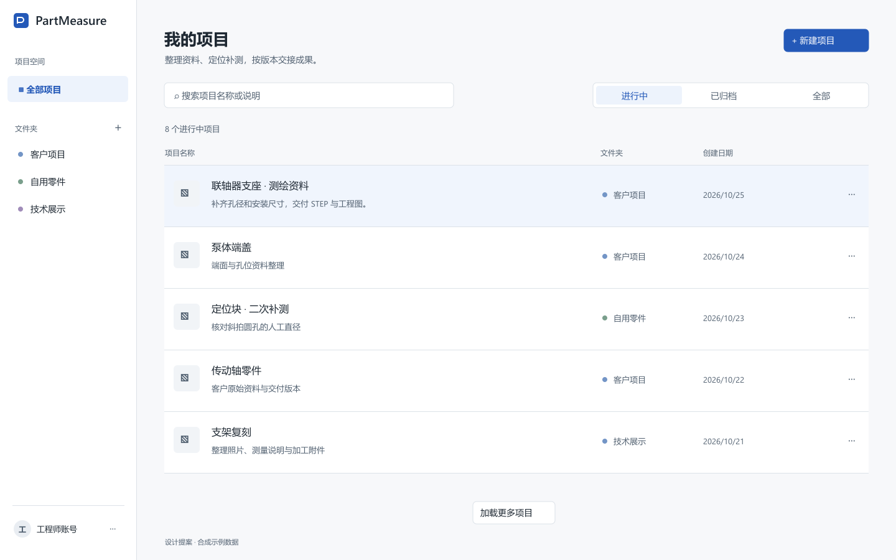
矢量原稿 · 回到顶部02 资料标注工作台 · 七类icon保留
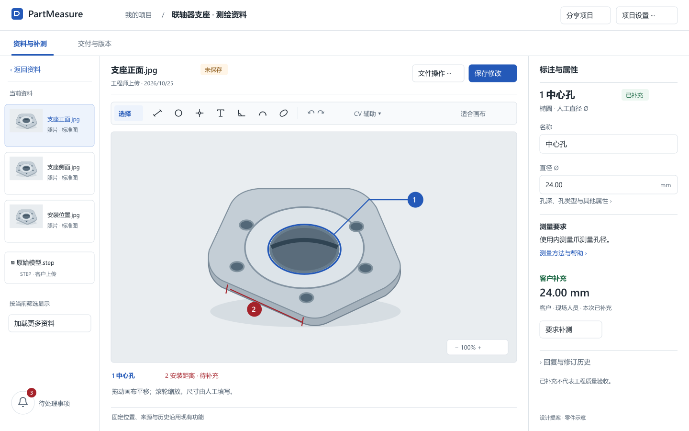
矢量原稿 · 回到顶部七类工具保持icon
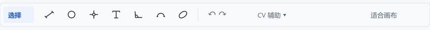
矢量原稿 · 回到顶部资料浏览与上传
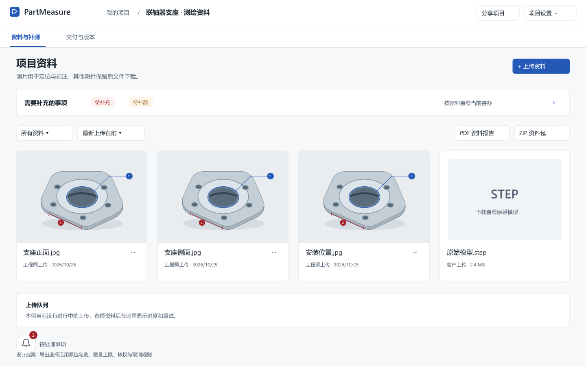
矢量原稿 · 回到顶部保留的待处理事项排版
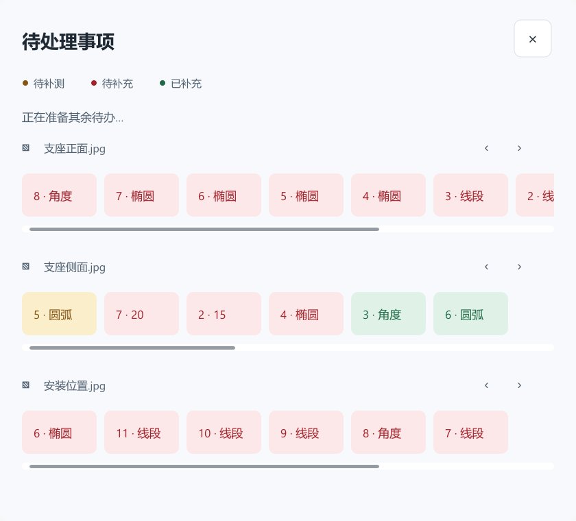
矢量原稿 · 回到顶部待办同浮窗下方详情
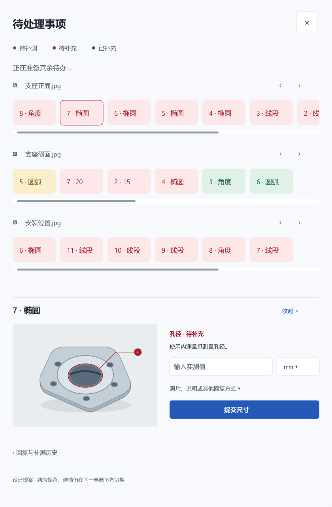
矢量原稿 · 回到顶部手机双角色图库快捷弹框
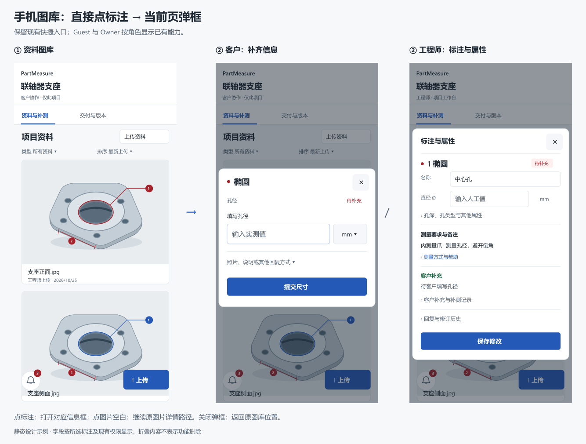
矢量原稿 · 回到顶部手机图库 · 保留标注热区
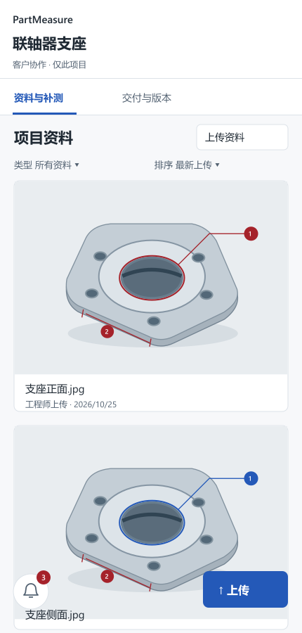
矢量原稿 · 回到顶部工程师原位属性框
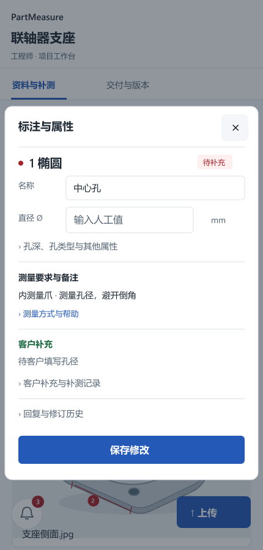
矢量原稿 · 回到顶部03 交付与版本
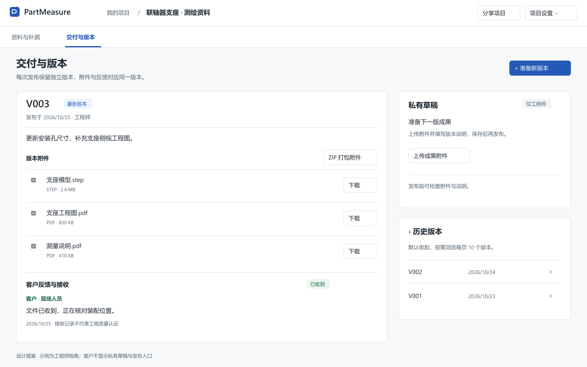
矢量原稿 · 回到顶部04 手机图库原位补齐弹框
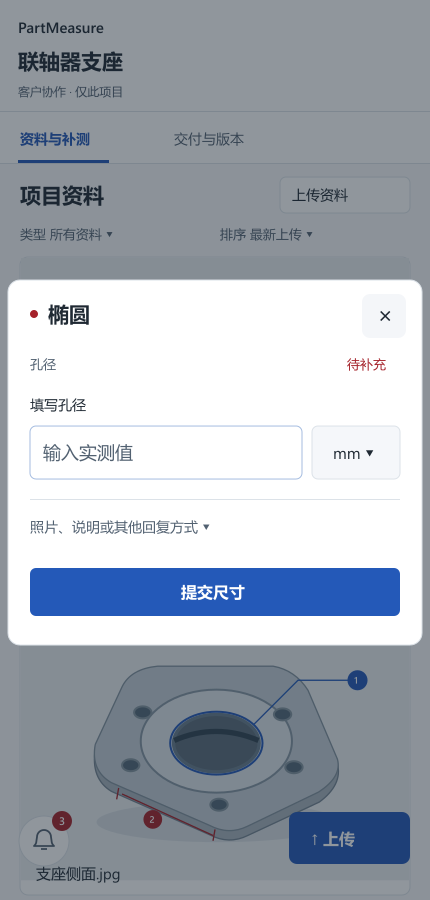
矢量原稿 · 回到顶部05 产品入口
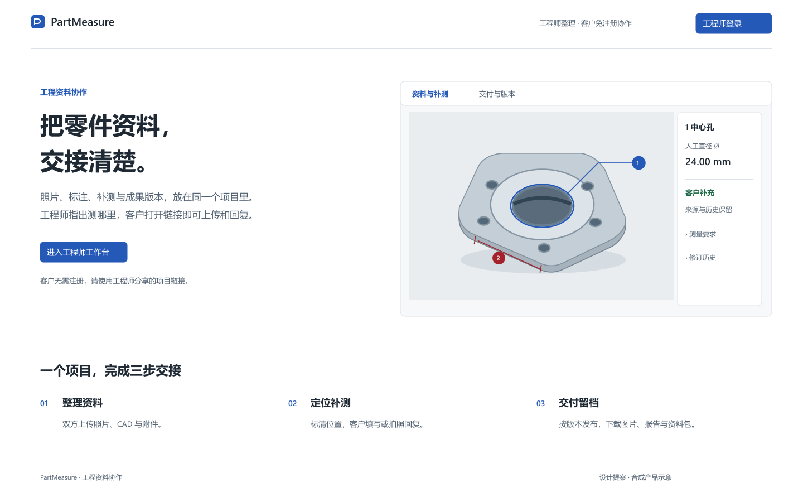
矢量原稿 · 回到顶部06 登录与注册体系
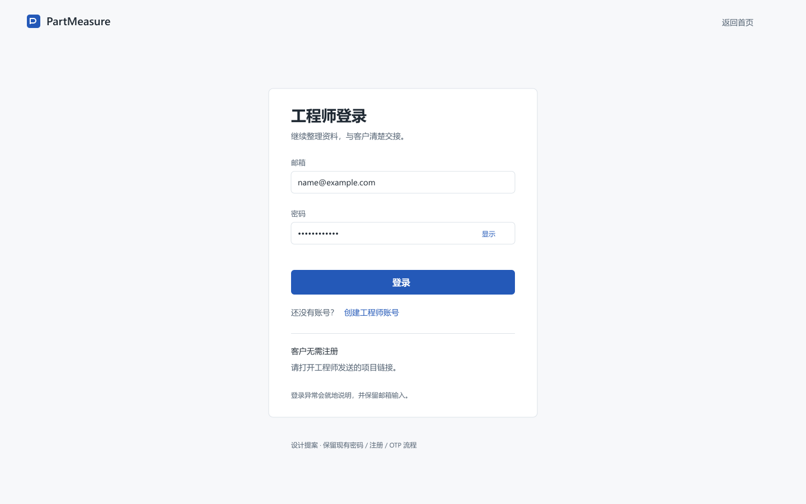
矢量原稿 · 回到顶部